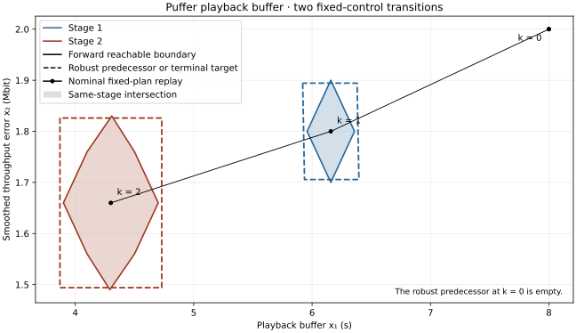
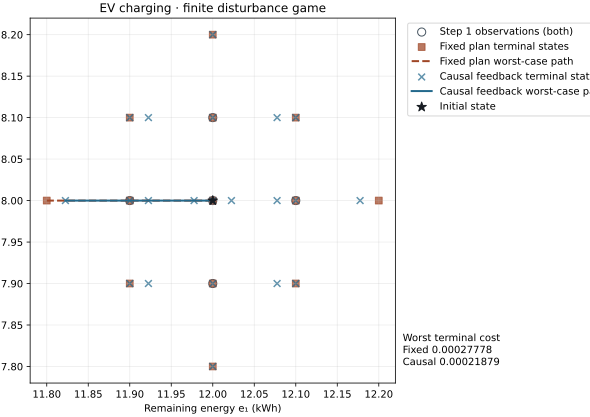
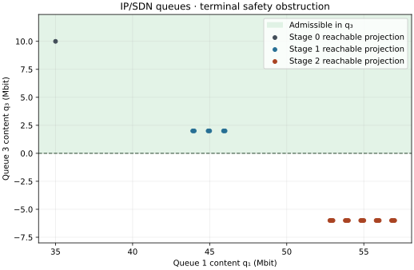

Disturbance guarantees and feedback
Two experiments use the same two-transition external-set fixture on 35 discrete models. The Puffer buffer illustrates whether a committed plan guarantees a terminal target. EV charging shows what changes when the second action can use the observed state.
- Compute a robust terminal predecessor
- Compare fixed actions with finite causal feedback
- Apply the saved state and actuator constraints
- Replay the experiments offline
Compute a robust terminal predecessor
For the two-state Puffer buffer, use x₀ = (8, 2)ᵀ, zero control and two transitions of 2.002 s. The update is xₖ₊₁ = A xₖ + E wₖ. The affine offset is zero.
⎡ 1 0.08 ⎤ ⎡ −1 0 ⎤ A = ⎣ 0 0.7 ⎦ E = ⎣ 0 1 ⎦
At each transition wₖ ranges independently over the convex hull of five vertices. Start at the centre (2.002, 0.4)ᵀ and add each of 0, (±0.2002, 0)ᵀ and (0, ±0.1)ᵀ to the centre. The displayed coefficients are rounded decimals. The replay uses the stored binary64 inputs. The nominal terminal state is (4.3, 1.66)ᵀ. Centre the target box there and take 10% of the larger of one and each absolute centre coordinate as its half-width.
For each terminal coordinate, write the additive contribution from the remaining disturbances as an interval [m, M] of extrema. A target interval [ℓ, h] then requires the corresponding coordinate of A2−kxₖ to lie in [ℓ−m, h−M]. If an interval reverses, the predecessor is empty. The Puffer stage-zero interval for the second coordinate has signed width approximately −0.008 Mbit. A nominal trajectory reaches the target centre, but no initial state can guarantee this target under the same fixed controls and disturbances.

| Target half-width | Stage 0 | Stage 1 | Stage 2 |
|---|---|---|---|
| 10% | 13 | 11 | 0 |
| 1% | 31 | 25 | 0 |
An independent exact-rational checker enumerated 1,013 suffix words and verified all 2,334 interval certificates. Every reported nonempty set contains its nominal stage state.
Compare fixed actions with finite causal feedback
The EV model has three energy states. Use A = E = I₃, B = diag(−0.225, −0.2375, −0.23), zero affine offset and x₀ = (12, 18, 25)ᵀ kWh. There are two transitions of 15 minutes. At each transition the action is (a, 0, 0)ᵀ with a ∈ {0, −0.1, 0.1}. The disturbance independently takes one of the five values 0, (±0.1, 0, 0)ᵀ, (0, ±0.1, 0)ᵀ.
The intended terminal cost is the sum of squared changes scaled by the squared initial energy in each coordinate. The replay uses the saved quadratic ½xᵀQx + ℓᵀx + 3, with the original binary64 coefficients in the input files.
Both policies choose the first action before the first disturbance. The fixed plan also commits to the second action at that time. The causal policy chooses its second action after observing x₁, then the second disturbance acts. This gives the causal policy the decision order minu₀ maxw₀ minu₁ maxw₁.

| Model | Fixed plan | Causal feedback |
|---|---|---|
| EV charging | 0.00027777778 | 0.00021879340 |
| Thirty-bank ring | 0.03988894635 | 0.03986116015 |
The other 33 models tied in exact arithmetic. The oracle checked 315 fixed plans, 485 second-decision states and all 70 initial values. The largest absolute discrepancy from the numerical SDK results was 2.58 × 10−14.
Both fixtures use universal intermediate state domains and authored actions or disturbances. The causal comparison is for the finite vertex game. The fixed plan also attains its maximum on these vertices for convex-hull uncertainty because the dynamics are affine and the terminal cost is convex. The results carry no physical calibration or performance claim.
Apply the saved state and actuator constraints
Keep the same finite actions, disturbance vertices, and terminal quadratic. Use the first two stages of the saved feasible-history constraint profiles and apply their terminal rows at the new deadline. One variant keeps only the component state and actuator bounds. The other includes mixed rows, positive-part actuator budgets, and terminal rows. The 29 source-continuous, three continuous-relaxation, and three authored-domain labels stay with the records.
Both fixed and causal policies are feasible on 33 models under either variant. The IP/SDN queues and warehouse/store models violate a lower state bound at the terminal stage. In the queue model every actuator-admitted plan has q₃ = −6 Mbit at that stage. The lower bound is q₃ ≥ 0.

| Model | Fixed plan | Causal feedback |
|---|---|---|
| EV charging | 0.00027777778 | 0.00027777778 |
| Thirty-bank ring | 0.03988894635 | 0.03986116015 |
The EV actuator bound excludes the negative action that provided the earlier causal gain. The thirty-bank policy retains its advantage. The additional rows do not change the outcomes for this particular action menu.
To pass the problem to the SDK, encode each complete fixed plan as one first-stage decision. For causal control retain two stages and share the second decision between exactly equal observations. Unsafe transitions lead to rejected nodes. The SDK and exact enumeration agree on all 140 feasibility statuses and all 132 costs for feasible policies. The largest absolute value difference is 6.98 × 10−16. Both results concern finite external vertices.
Download the constrained C++ replay, exact ledger, inputs, and figure.
Replay the experiments offline
Download the C++ clients, replay instructions, inputs, raw results and independent checkers. Use the bundled CMake project with the pinned SDK source, then run the two clients and the certificate verifiers as described in the included REPLAY.md.